UDN
Search public documentation:
GameplayDebuggingKR
English Translation
日本語訳
中国翻译
Interested in the Unreal Engine?
Visit the Unreal Technology site.
Looking for jobs and company info?
Check out the Epic games site.
Questions about support via UDN?
Contact the UDN Staff
日本語訳
中国翻译
Interested in the Unreal Engine?
Visit the Unreal Technology site.
Looking for jobs and company info?
Check out the Epic games site.
Questions about support via UDN?
Contact the UDN Staff
UE3 홈 > 게임플레이 프로그래밍 > 게임플레이 디버깅
게임플레이 디버깅
문서 변경내역: Jeff Farris 작성. 홍성진 번역.
개요
리모트 콘트롤
 RemoteControl(리모트 콘트롤)은 게임 중에 열 수 있는 특수한 창으로, 게임의 특정 양상에 대한 정보와 제어권을 제공해 줍니다.
이 창은 게임 창의 외부적인 것이며 wxWindows 를 사용하여 생성되므로, wxWindows 가 꺼져있는 경우엔 사용할 수 없으며, 언리얼 에디터의 에디터에서 플레이 게임 세션을 실행할 때가 아니라면 꺼져있는 것이 디폴트입니다. wxWindows 및 리모트 콘트롤을 켜려면, 게임을 실행할 때
RemoteControl(리모트 콘트롤)은 게임 중에 열 수 있는 특수한 창으로, 게임의 특정 양상에 대한 정보와 제어권을 제공해 줍니다.
이 창은 게임 창의 외부적인 것이며 wxWindows 를 사용하여 생성되므로, wxWindows 가 꺼져있는 경우엔 사용할 수 없으며, 언리얼 에디터의 에디터에서 플레이 게임 세션을 실행할 때가 아니라면 꺼져있는 것이 디폴트입니다. wxWindows 및 리모트 콘트롤을 켜려면, 게임을 실행할 때 -wxwindows 명령줄 인수를 붙여 줘야 합니다.
이 기능에 대한 세부적인 사용 안내서는, Remote Control KR 페이지를 참고해 주시기 바랍니다.
프로퍼티 조사 및 조작
오브젝트 데이터 조작
이 부분의 콘솔 명령을 통해 게임-내 오브젝트 또는 심지어 클래스 디폴트 오브젝트에 대한 프로퍼티 창을 열어 주어, 실행시간에 확인하며 변경할 수 있습니다.var() 로 선언되지 않은 변수가 전부 포함된 None 카테고리가 있는데, 여기서 오브젝트의 데이터 전부에 완벽히 접근할 수 있습니다.
이와 같은 명령은 게임 창의 외부에 wxWindows를 사용하여 생성된 프로퍼티 창에 의존하므로, 이 명령은 wxWindows가 꺼져 있으면 (디폴트로) 사용할 수 없습니다. wxWindows와 이 콘솔 명령을 켜려면, 게임에 -wxwindows 명령줄 인수를 붙여 실행해 줘야 합니다.
주: 이는 리모트 콘트롤 역시도 켭니다. 필요한 경우 -norc 명령줄 인수를 붙여 리모트 콘트롤 창을 끌 수도 있습니다.
EditActor
editactor 콘솔 명령은 게임 내 액터의 프로퍼티를 프로퍼티 창에서 쓸 수 있게 해 줍니다. 이 명령은 Actor 에서 확장된 클래스에만 작동합니다. 이 명령은 이름이나 클래스를 인수로 받습니다. 옵션으로 이름이나 클래스 대신 trace 인수를 전달해 주면, 플레이어의 카메라가 가리키고 있는 Actor 가 사용되도록 합니다.
Actor 이름이 지정되면, name= 접두사가 있든 없든 해당 Object 의 프로퍼티가 표시됩니다.
editactor name=UTPawn_0
UTPawn_0 오브젝트에 대한 프로퍼티 창이 열립니다.
클래스가 지정되면, 해당 클래스의 첫 Actor 또는 그 서브클래스의 프로퍼티창이 표시됩니다.
editactor class=UTPawn첫
UTPawn 을 선택합니다. 이 경우 거의 현재 플레이어의 UTPawn 이 열리게 됩니다.
trace 인수가 지정되면 조준된 Actor 의 프로퍼티가 표시됩니다.
editactor trace카메라가 조준하고 있는 오브젝트의 프로퍼티 창이 열립니다. 사용 예제: 비히클을 새로 만들 때, 말할 것도 없이 승차감 향상을 위해 비히클의 프로퍼티를 미세-조정하는 것이 좋을 것입니다. defaultproperties 혹은 .ini 파일에 프로퍼티 값을 설정하면 게임을 시작하고, 현재 값을 시험하고, 게임을 닫고, 값을 조정하고, 게임을 다시 시작하고, 값을 시험하고 등등이 이어집니다. 이는 별로 이상적이지 않으며 그다지 효율적이지도 않습니다.
editactor 명령을 사용하면 비히클의 모든 혹은 어떤 프로퍼티이든 게임 실행 중에도, 심지어 플레이어가 비히클에 탑승하고 시험 준비 완료 상태에서도 조정할 수 있습니다. 게임플레이 튜닝에 있어 훨씬 효율적이고 직관적인 방법인 것입니다.
여기서 가장 간단한 방법은 아마도 trace 인수를 사용하여 살펴보려는 탈 것을 바로 조준하는 것이겠지만, 클래스를 직접 지정하는 것 역시도 쉽습니다.
비히클의 경우 직접 맵에 놓이기 보다는 보통 팩토리에서 동적으로 스폰되기 때문에, 정확한 이름을 알아내기가 쉽지 않을 수 있습니다.
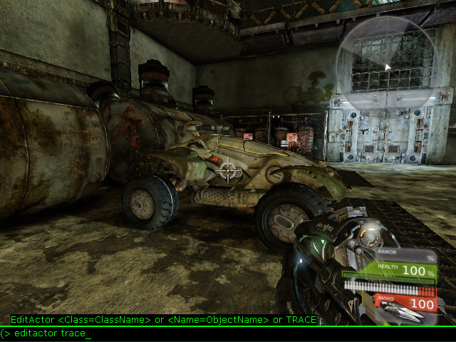
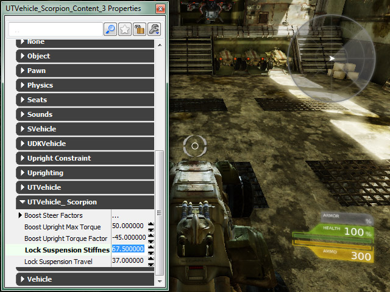
EditObject
editobject 콘솔 명령은 게임 내 특정 오브젝트의 프로퍼티를 프로퍼티 창에 나타나게 합니다. 이 명령은 editactor 명령과 기능상으로는 똑같지만 Actor 에서 확장된 클래스여야 한다는 제한이 없으며, trace 인수 옵션 역시도 없습니다.
주: 이 명령은 언리얼 에디터 안에서 에디터에서 플레이 세션을 통해 맵을 실행할 때, 특정 클래스나 오브젝트에 작동하지 않을 수 있습니다.
Object 이름이 지정되면, name= 접두사가 있든 없든 해당 Object 프로퍼티가 표시됩니다.
editobject GameThirdPersonCamera_0 editobject name=GameThirdPersonCamera_0둘 다 기능상으로는 같으며,
GameThirdPersonCamera_0 오브젝트의 프로퍼티가 표시됩니다.
클래스가 지정되면 해당 클래스의 첫 Object 또는 그 서브클래스의 프로퍼티가 표시됩니다.
editobject class=GameThirdPersonCamera첫
GameThirdPersonCamera 를 선택합니다. 이 경우 현재 플레이어의 GameThirdPersonCamera 프로퍼티가 열릴 것입니다.
사용 예제:
일인칭 이외의 카메라 구현은 보통 플레이어 메시에서 떨어지는 카메라 오프셋을 요구하는데, 다른 것보다도 바로 이 것에 튜닝이 필요할 것입니다. 물론 카메라 오프셋을 적절히 줘서 바라는 대로 나오게 하는 것은 까다로울 수 있습니다. 매번 조정할 때마다 컴파일해 가며 지속적으로 코드를 왔다갔다 시험하는 것은 분명 바람직한 일은 아닐 것입니다. GameFramework 예제의 일부인 모듈식 시스템과 비슷한 시스템을 가지고도 작업하는 중이라면, 액터가 아닌 오브젝트를 다룬다는 뜻입니다. editobject 명령으로 게임 실행 중에 그 모듈의 프로퍼티를 쉽게 확인해 가며 변경할 수 있으며, 엄청 간단하고 직관적으로 카메라를 조정할 수 있습니다.
editobject 명령을 사용하고 거기에 카메라 모듈의 클래스를 전달해 주면, 그 모듈의 프로퍼티가 표시되어 오프셋을 바로 튜닝할 수 있게 됩니다.
editobject class=UDNCameraModule현재 사용중인 카메라 모듈의 프로퍼티 창이 열립니다.
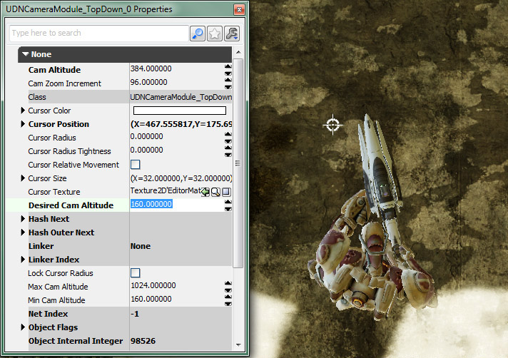
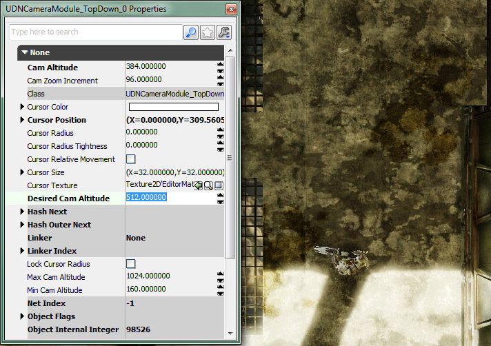
EditDefault
editdefault 콘솔 명령은 클래스 디폴트 오브젝트의 프로퍼티를 표시해 주며, editobject 콘솔 명령으로 클래스를 지정했을 때와 비슷합니다. class= 접두사를 사용하여 클래스를 지정해 줄 수도 있지만, 꼭 필요한 것은 아닙니다. 이 명령은 자주 스폰되는 클래스, 특히 프로젝타일이나 실시간 전략 게임에서의 유닛같은 것에 매우 유용합니다.
주: 이 명령은 언리얼 에디터 내 에디터에서 플레이 세션을 통해 맵을 실행할 때는 사용할 수 없습니다.
사용 예제:
프로젝타일 작동방식을 조정할 때 코드를 들여다 보며 시험해 본다 치면 지루한 작업일 것입니다. 게임을 시험하면서 내부에서 직접 디폴트 값을 수정해 주면, 프로세스의 능률이 엄청 오를 것입니다.
그냥 editdefault 명령을 사용한 다음 프로젝타일 클래스의 이름을 전달해 주면 됩니다:
editdefault UTProj_LinkPlasma editdefault class=UTProj_LinkPlasma둘 다 기능적으로 같으며
UTProj_LinkPlasma 의 디폴트 프로퍼티를 표시하여 변경할 수 있도록 해 주며, 앞으로 해당 클래스의 모든 인스턴스에 대한 작동방식을 조절할 수 있습니다.

EditArchetype
editarchetype 콘솔 명령은 아키타입의 프로퍼티를 사용가능한 상태로 만들어 줍니다. 편집할 아키타입은 명령 다음 아키타입에 경로를 (Package.Group.Name) 전달하여 지정합니다. editdefault 와 마찬가지로 이 명령 역시 실시간 전략 게임의 프로젝타일이나 유닛, 데이터 정의나 콘텐츠 홀더로 사용되는 아키타입 등 자주 스폰되는 오브젝트의 템플릿으로 사용되는 아키타입에 매우 좋습니다.
아키타입의 프로퍼티를 편집할 수 있는 기능에 추가로, 프로퍼티 창의 버튼을 사용하여 패키지 내 아키타입에 세팅을 저장하여 유실되지 않도록 할 수도 있습니다.
주: Play In Editor 세션을 통해 언리얼 에디터 안에서 맵을 실행할 경우에는 이 명령이 지원되지 않습니다.
사용 예제:
프로젝타일에 대해 템플릿으로 아키타입을 사용하도록 구성된 웨폰 클래스가 있다 치겠습니다. 그러면 프로젝타일 트윅 작업을 하고도 스크립트 수정이나 다시 컴파일할 필요 없이 쉽게 그 외양이나 작동방식을 바꿀 수 있습니다. 그래도 게임을 실행한 다음 테스트하고, 게임을 닫고서 변경을 하고, 다시 게임을 실행한 다음 테스트를 하는 등의 작업을 거쳐야 하는 것은 보통 어쩔 수 없습니다. editarchetype 명령을 사용하면 게임 실행 도중 수정을 할 수 있게 되니, 작업방식의 편의와 효율성을 높일 수 있게 됩니다.
현재 아키타입 세팅을 사용하는 프로젝타일에다:
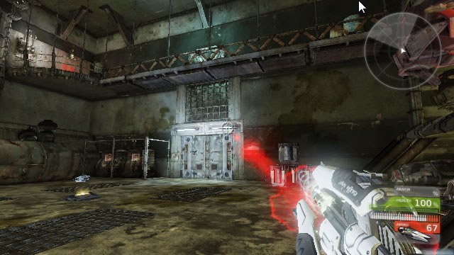
단순히editarchetype 명령에 아키타입 경로를 전달해 주기만 하면:
editarchetype UDNProjectiles.RedPlasma
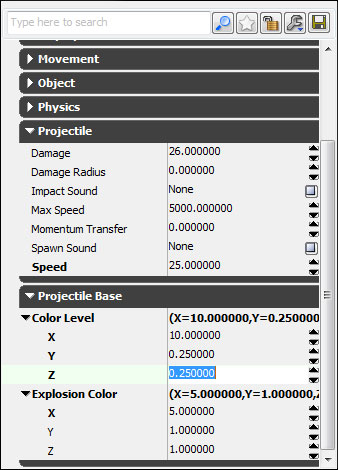
프로퍼티 수정을 통해 실시간으로 프로젝타일의 외양과 작동방식이 변경됩니다: 세팅이 맘에 들어 버렸으면 프로퍼티 창의 버튼을 눌러 현재 세팅을 아키타입에 저장하면 됩니다.
세팅이 맘에 들어 버렸으면 프로퍼티 창의 버튼을 눌러 현재 세팅을 아키타입에 저장하면 됩니다.
정적인 오브젝트 데이터 조사
이 콘솔 명령 들은 게임 실행 도중 오브젝트 데이터의 정적인 스냅샷을 조사하는 데 좋습니다. 명령이 실행된 시점에 지정된 데이터의 값을 갈무리한 다음 그 데이터를 콘솔에 표시해 주고 로그로도 출력해 줍니다.GetAll
getall 콘솔 명령은 특정 클래스의 오브젝트 전부에 대한 특정 변수 값을 반환하고, 그 값을 '~' 키를 눌러 볼 수 있는 게임내 콘솔에 표시한 다음 로그에 출력합니다. 이 명령에는 클래스 이름과 그 클래스 내에 접근할 변수 이름이 붙습니다.
사용 예제:
커스텀 카메라 시스템 기껏 새로 구현해 놨는데, 게임을 실행하고 보니 예상한 대로 작동하지 않음을 알게 되면 좌절하게 마련입니다. 카메라 함수 자체에 문제가 있는 것일 수도 있고, 애초에 카메라의 생성 및 할당이 제대로 이루어지지 않은 간단한 문제일 수도 있습니다. 아무튼 게임 실행 도중 바로 확인해 볼 수 있다면 훨씬 쉽고 효율적일 것입니다. getall 명령으로 그렇게 할 수 있습니다.
이 명령을 사용하고 커스텀 PlayerController 클래스와 그 안에 포함된 카메라 변수 이름을 전달해 주면 해당 변수의 현재 값이 콘솔에 바로 표시되어, 카메라 할당이 제대로 되지 않은 건지 아니면 다른 문제가 있는지를 즉시 알 수 있습니다.
getall UDNPlayerController PlayerCamera게임내 콘솔에 메모리 모든
UDNPlayerController 의 Name 및 PlayerCamera 를 나열합니다.

PlayerCamera 값이 있으며 None 이 아니기에, 카메라 할당이 제대로 이루어 졌음을 알 수 있습니다.
부가 파라미터:
이 명령에 약간의 옵션 파라미터를 붙여 주면 특정 클래스의 단일 인스턴스에 대한 특정 변수 값을 구하는 데 사용할 수도 있습니다.
- Name= - 이 이름을 갖는 오브젝트에 대한 특정 변수 값을 표시합니다.
- Outer= - 이 오브젝트를 그
Outer로 갖는 지정 클래스의 모든 인스턴스에 대한 특정 변수 값을 표시합니다.
- SHOWDEFAULTS - 현재 값에 추가로 특정 변수의 디폴트 값을 표시합니다.
- SHOWPENDINGKILLS - 고아상태가 되어 삭제 계류중인 인스턴스도 표시합니다.
- DETAILED -
GetDetailedInfoInternal()함수를 통해 인스턴스에 대한 세부 정보를 표시합니다.
GetAllState
getallstate 콘솔 명령은 특정 클래스 내 모든 오브젝트의 현 상태를 반환하여, '~' 키를 눌러 볼 수 있는 게임내 콘솔에 전부 표시하고, 로그에 출력합니다. 이 명령에는 접근할 클래스 이름이 덧붙습니다.
사용 예제:
getallstate UTPawn게임내 콘솔에 메모리의 모든
UTPawn 의 현 상태를 나열합니다.
 게임 내의
게임 내의 UTPawns 가 무엇을 하고 있는지에 대한 간단한 개요가 표시됩니다. 예외적인 것을 빠르게 짚어낼 수 있습니다. 이 스크린샷에서 볼 때, 스냅샷이 찍히는 시점에서 봇이 스폰되고 있으나 UTPawn 은 Dying 상태입니다.
동적인 오브젝트 데이터 조사
이 콘솔 명령들은 시간에 따라 변하는 오브젝트 데이터를 조사하기에 좋습니다. 매 프레임마다 HUD의 일부로써 게임에 겹쳐놓이는 화면에 직접 동적으로 업데이트되는 데이터 세트를 표시합니다.DisplayAll
displayall 콘솔 명령은 특정 클래스의 모든 오브젝트에 대한 특정 변수 값을 반환하여 화면에 표시합니다. 이 명령에는 클래스 이름과 해당 클래스 내 접근할 변수 이름이 덧붙습니다.
사용 예제:
displayall UTPawn Location화면에 모든
UTPawn 의 Name 및 Location 을 나열하며, 매 프레임마다 업데이트됩니다.

DisplayAllState
displayallstate 콘솔 명령은 특정 클래스 내 모든 오브젝트의 현 상태를 반환하여 화면상에 표시합니다. 이 명령에는 접근할 클래스 이름이 덧붙습니다.
사용 예제:
게임에 믿을만한 AI를 만들기란 시작부터가 까다로운 작업이며, AI의 상호작용을 주시할 수 있는 방법을 두지 않고서는 훨씬 더 까다로운 작업이 될 것입니다. displayallstate 명령은 이러한 작업 중 하나를 빠르고 쉽게 해 줍니다. 모든 AI 개체의 현 상태를 화면상에 바로 표시되게 할 수 있으며, 새로운 결정을 내릴 때마다 매 프레임 업데이트됩니다.
이 명령을 사용하고 AI 개체의 클래스를 전달해 주면, 준비된 AI 개요를 볼 수 있습니다.
displayallstate UTBot메모리 내 모든
UTBot 의 현 상태를 화면상에 나열하여 매 프레임 업데이트해 주며, 각 봇이 무엇을 하고 있는지 매우 쉽게 알아볼 수 있습니다.
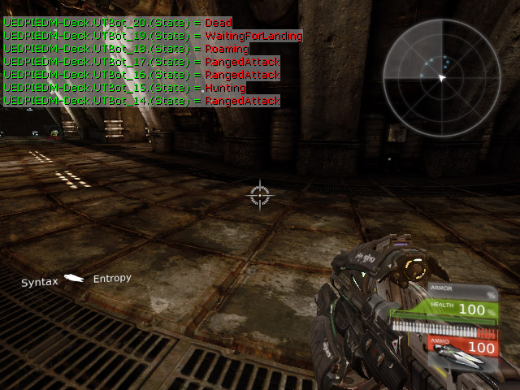
DisplayClear
displayclear 콘솔 명령은 현재 화면에 표시되고 있는 오브젝트 데이터를 전부 비웁니다. 이 명령은 인수를 받지 않습니다.
사용 예제:
displayclear이전에 DisplayAll 또는 DisplayAllState 명령으로 화면상에 표시되고 있는 오브젝트 데이터를 비웁니다.
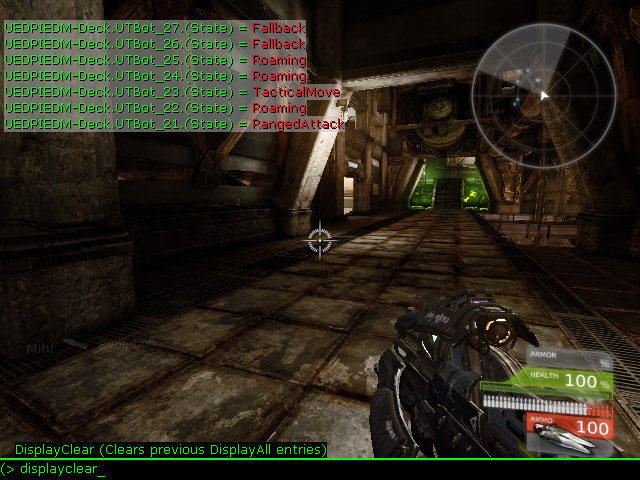

오브젝트 데이터 변경
Set
set 콘솔 명령은 특정 클래스는 물론 클래스 디폴트 오브젝트의 모든 인스턴스에 대한 변수 값을 설정하빈다. 이 명령에는 클래스의 이름, 변경할 클래스 내 변수, 변수를 설정할 값이 덧붙습니다. RTS 등에서 웨폰, 프로젝타일, 봇, 유닛 등을 조정하는 데 매우 좋습니다.
주: 이 명령은 언리얼 에디터 내 에디터에서 플레이 세션을 통해 맵을 실행할 때는 사용할 수 없습니다.
사용 예제:
무기 밸런싱은 한 무기가 다른 무기보다 월등히 쎄지지 않도록 프로퍼티를 올바르게 조합해야 하니 까다로운 작업이 될 수 있습니다. 제정신이라면 코드의 프로퍼티를 직접 바꿔가며 컴파일 및 테스팅을 거치고 싶지는 않을 것입니다. 보통 웨폰의 모든 인스턴스에 영향을 끼치고 싶기에 editactor 명령으론 부족할 것입니다. 그러나 set 명령은 그런 작업에 최적입니다.
이 명령에 클래스 이름, 변수 이름, 그 변수에 대한 값을 전달해 주면, 현존하는 클래스의 모든 인스턴스와 그 이후에 스폰될 수도 있는 인스턴스에 대한 해당 변수값을 쉽게 변경할 수 있습니다.
set utweap_linkgun maxammocount 150모든 링크 건의 최대 탄약 수가 늘어나게 됩니다.
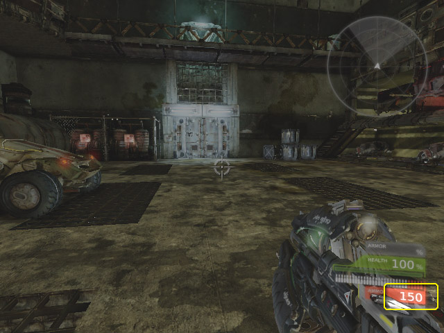
게임플레이 코드 프로파일링
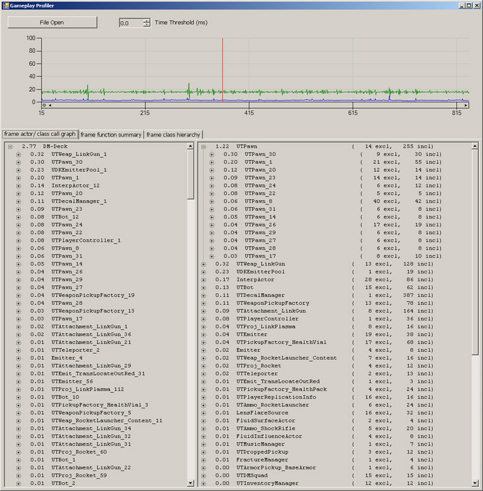
자세한 내용은 Gameplay Profiler KR 페이지를 참고해 보시기 바랍니다. 게임플레이 프로파일링에 유용한 명령줄 인수에 대한 세부적인 정보는 Gameplay Profiling KR 페이지를 참고해 보시기 바랍니다.STAT 명령
STAT GAME 명령으로 스크립트가 매 틱 업데이트되는 데 걸리는 누적 시간을 표시할 수 있어 특히나 좋습니다.
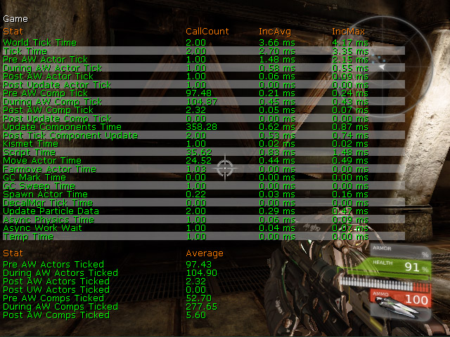
이를 포함한 기타 STAT 명령에 대한 세부 정보는 Stats Descriptions KR 페이지를 참고해 주시기 바랍니다.